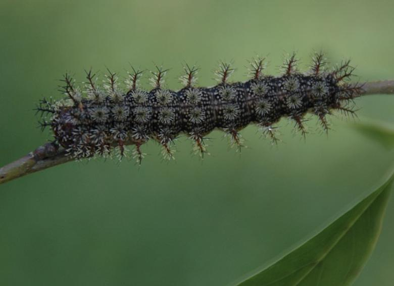
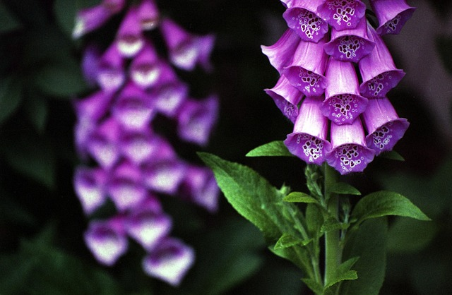
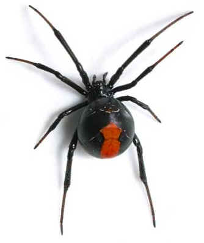

Home
Welcome to Nature's Hidden Dangers, here you will explore fascinating fungi that can heal or harm, and spiders whose delicate webs mask impressive abilities. You will read about vibrant flowers that conceal toxic defenses to caterpillars whose soft appearance hides powerful poisons. Here you can learn how to stay safe while you admire and appreciate their remarkable organisms.



